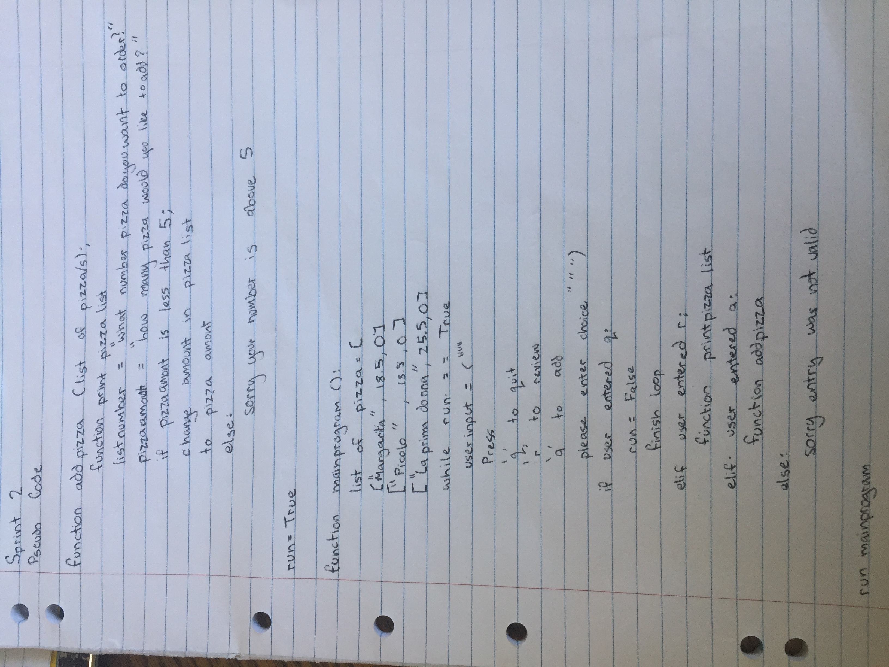
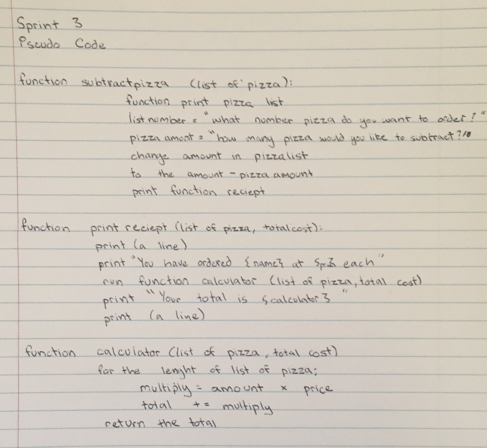
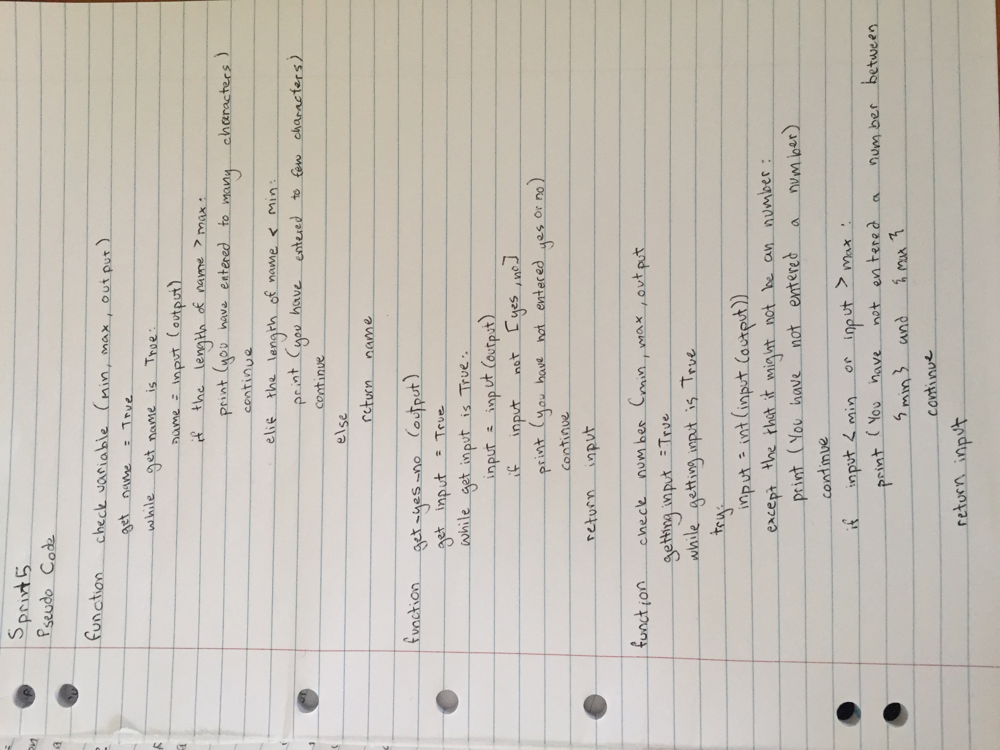
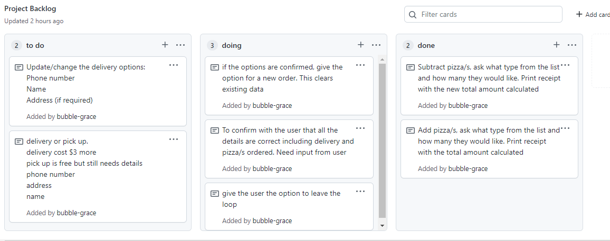

Brief
The aim of this project is to simplify and organise phone orders for a pizza company
To start this project, I made a plan of what I needed, this includes but was not limited to pizza price, lists and quiting the program. For this I also made a project backlog, this has all the information stored in one place, from this I will make multiple sprints approximately one for each idea. The focus of this method of structuring, is to break a large project into small manageable chunks these are sprints, for this project these sprints will be about one to two lessons.

Sprint One
The aim of this sprint is to create a loop with printing to menu and being able to quit/exit

This code above prints out the list when the user presses r and then also can quit the loop by pressing q, if they enter any other option a validation error. The aim of this code is establish the list, this list has three variables, one for the index, one for price and the other for name. The quit is to exit the loop and prints a helpful message indicating this. The review option shows the list formatted for easier use. The list here only has three variables, this makes the code at the moment easier to follow. Latter I will expand this lists to 10 options.
Sprint Review and Testing
This version is currently functional and works just as expected with the input you would expect. The sprint 1 is fine and does not have too many issues. However, there is an upper/lower case situation because it only allows the lower case option, if you enter upper case as seen above the code will not understand the input . Easy fix with .lower for next version.
Sprint Two
Sprint Two Plan
My aim for this sprint is to add pizzas to the costumer order
Description
In this version you can now add pizzas, this allows the user to be interactive with the system. To add pizzas you need to know the index number, this is done through a simple code that gets referenced multiple times. The one issue I had here was accessing my files, this was easily fixed through some re-organisation. This code is controlled by the indexes, the user enters which indices they want to access, then adds the amount to the list.
This is all functional, to do this I added some basic validation. The company asked that there would be a max of pizzas per type. If they return more than 5 pizzas the program sends an error message and doesn't add the amount.
Photos of the working code and Evaluation

Above is a photo of my tests for this version, the first part of the tests went well and performed as expected. However, when I went to test the adding function, this worked with the normal 0 to 2 indices. However, when I went to try to put an indices of 3, the code crashed. This is an issue I would like to sort out for the next version with some validation, including an except errors part of the code.
Another major error for this version is that if the user enters a blank space or a letter instead of a number for the index, the code crashes. This is because the code requires and integer, if it does not receive an integer it crashes. This is a problem because many people will interpret the "please enter an index number", could be asking for an integer or the number in words for example two. I also have to account for a user accidentally entering a blank space as we have all done this before. This can be fixed by validation which I will mention in a later version.
Sprint Three
Sprint three planning and description
The aim of this sprint is to have a functioning subtracting pizza option as well as being able to see a receipt (another function)
In this version you can now subtract pizzas, this allows the user to be interactive with the system. To subtract pizzas you need to know the index number, this is done through a simple code that gets referenced multiple times. This is very similar to the code for the addition of pizzas.
However the new feature here is the addition of a print receipt function, this collects the list of the users order, this being the amount and type of pizzas ordered. This then goes to the calculator where the total is calculated. This is all printed in an easy to follow “receipt” format.
Sprint Review with Testing

This is all functional with the users expected input, to do this I added some basic validation from the previous version, to only allows an index on the list. This is though validation it has a value error function as well this accepts that the input might not always be an integer, this then prints out please enter and integer and gives the user a chance to fixe their mistakes. This also has a maximum and minim section, the minimum is set at 0 and maximum is set at 2, if the user enters a number above 2 the error message says sorry your number is above 2 please try again. The same idea applies for the minimum, the code will keep trying until the user enters an input that is expected.
However when the user subtracts pizza/s without ordering any pizza/s the code allows it. This means the user can have negative pizza/s this then passes down to te receipt function which prints out a negative value. As a user this would be very confusing. This can be fixed not be validation but by user separate lists. This idea is that there is the menu list with all the pizza/s, and then there is also customer list this list would only have the ordered details. Then the subtraction could only be for the customer list.
Sprint Four
The aim of this sprint is choosing the delivery option

For this version I worked on creating a delivery option that allowed the user to choose either takeaway at no extra cost or delivery at a cost of three dollars. Both these options need more information about the user including but not limited to phone number, address and name. The name and address of the user was easy to validate with string validation. The hard part was the phone number for this I had two trial options, these had featured the same and different
Trial 1
This trial was very simple and involved validating the length of the phone number with a len function. This meant the phone number had to be between 8 and 12 digits long as this was the minimum and maximum length a regional phone number could be according to Google. There was a few errors when testing this code including that if the phone number started with a 0, the code would drop it, because it was looking for the simplest form of the “number”. This could lead to many problems in the future.
Trial 2
This trial was one including regex, that needed to be imported. This is shown by the import re code at the top of the page. This imports a package from python that does not need to be downloaded. The function I wanted to run this code through was this: (^\([0][3]\))(\d{7}$)|(^\([0][4]\))(\d{7}$)|(^\([0][6]\))(\d{7}$)|(^\([0][7]\))(\d{7}$)|(^\([0][9]\))(\d{7}$)|(^\([0][2][1]\))(\d{6,8}$)|(^\([0][2][2]\))(\d{6,8}$)|(^\([0][2][7]\))(\d{6,8}$)|(^\([0][2][9]\))(\d{6,8}$)|([0][8][0][0])([\s])(\d{5,8}$) This looks very confusing however it all makes sense, to start with I wanted to work out what type of phone numbers people could have, and I ended up with this list for New Zealand.
Landline phone numbers with area codes
- 03
- 04
- 06
- 07
- 09
Mobile phone numbers with the prefix
- 021
- 022
- 027
- 029
The final phone number I wanted to include was an 0800 number because theses as also used around NZ
The (^\([0][2][1]\))(\d{6,8}$)|(^\([0][2][2]\))(\d{6,8}$)|(^\([0][2][7]\))(\d{6,8}$)|(^\([0][2][9]\))(\d{6,8}$)| part of this code is for the mobile numbers. I would like the user to enter the prefix to the number in the brackets. This allows the user to enter any prefix beginning with 02 followed by a number that is either 1,2,7 or 9. The rest of the phone number must then be between 6 and 8 digits long as this is what the length should be between. THe format should be (021)flowed by the 6-8 digit number.
The ([0][8][0][0])([\s])(\d{5,8}$) part of this code is for the 0800 numbers as you can see this is not in brackets. The number then must have between 5 and 8 additional digits.
The (^\([0][3]\))(\d{7}$)|(^\([0][4]))(\d{7}$)|(^\([0][7]\))(\d{7}$)|(^\([0][9]\))(\d{7}$) part of the code above is for the landline numbers, this requires that the prefix 0 then either 3,4,6,7 or 9 be in a bracket followed by 7 digits.
Regex Evaluation
By using this code I learnt a lot about regex and how it works, which allowed me to make this code, this became a function through using an if statement with a search function that returned an error if none of these conditions were met. Regex is the search used for validation, in this case for a pattern between the phone number and a viable NZ phone number.
Trial Evaluation
After a lot of reach I decided that option two was viable for the project I was doing. This is because it would accept the number for having the leading zero and provide a more in depth understanding of the code and what errors the number could have. To fully implement this from a trial basis I would need to fully explain to the user what format their answer needed to be in.
Sprint Review with Testing
This version is now functional with the addition of regex. This code now all works, this now I believe collects all the necessary information about the person ordering and their order as in the amount of pizzas they want. The next version will be the final version and this will be to confirm all the order details including delivery, the cost and the amount of pizzas. The user will then confirm the order if the details are correct if not they can be changed.
Sprint 5
The aim for this sprint is to make function for the validation to be called multiple times

Integer validation
String validation
The good thing about this validation is that it can be reused multiple times, because the max and min are collected through the function where the validation is called. This allows the max and min to be different depending on the situation.
Phone number validation
Yes/no validation
The yes and no validation and the phone number validation, is more specific only used 2 times each. This is done in a similar manner, there is a criteria the input must be. If not the user will be told and get another chance to enter the right input.
Sprint Review with Testing
As you can see above the validation works as expected with my example scenarios, these variables can now be changed easily for usability for example if the name length was to shorten the coder would only need to change the maximum length where the function was called instead of changing the validation. These 4 validation forms cover most of the input the user is asked to enter, a number, a word, yes or no and a phone number. The reason why the phone number could not come under the number validation was because I wanted to input to be a New Zealand and this could have a special ico for example +.
Sprint 6
The aim for this sprint is to make a confirmation and update order functions
For sprint 6 the main goal was for the user to be able to confirm all the details including the amount of pizzas and the pickup/delivery information. For this code to work it was printing all the information collected from earlier, however the user may not have ordered any pizzas or entered no delivery details. The code then gives an error message to the user and then returns to the main menu.
When I was testing this code everything was functional however I noticed I was often typing too fast and made mistakes in the details for the delivery which was the name, phone number and address. To solve this problem I added a function which allowed the user to change or update any of these options.
The second part of this sprint was to clean up the code by making sure the relevant code conventions were followed and there were minimal errors. This was done through the use of the feature on pycharm.
Sprint Review with testing
When I was cleaning up my code, I discovered another issue I wanted to fix, this was regarding ordering pizzas. Currently, if the user want to order more of a pizza they have already ordered, it lets them order up to five more. To fix this I added a function to check how many if any of the pizzas were already ordered then subtract this from the main pizza maximum amount. This allowed the user to enter up to 5 TOTAL pizzas instead of 5 per extra addition.
From this video I discovered one last problem, if the user has subtracted pizzas even if it is at 0 the customer list keeps the variable. Hence, I have added a small piece of code that if the pizzas on the list equals zero the code will delete the order from the costumers list.
Relevant Implications Summary
Usability
Usability is how easy the program is to use, this is done by clear informative user feedback or even fixes the error without the user knowing to make the experience more enjoyable. Uses consistent messaging and navigation system, is another part of usability.
I believe that my code is easily usable, this is because the questions and feedback were polite and well-meant. I tried to include please and thank you, and other supportive messages. The user entry is also validated, if the user makes an error, the program will identify it and give feedback to the user with an option to remedy the issue.
Functionality
Functionality is that the program works properly this includes not crashing despite the users interesting inputs. It also needs to meet the users requirements of being able to add and subtract pizzas, add delivery/pick up option, confirming order, closing the order and starting a new order.
In order to test the functionality of my code, I got others to test my code as seen in the video above. Despite the users changing it’s mind and making sessions that might not always be what was expected. This all worked without crashing, only calmy displaying the user with an error message that was targeted and helpful. This was because I systematically tested after each sprint.
Sustainability and Future Proofing
Future proofing and sustainability is the task of ensuring the code can be used by future generations, through easy update options, adding new features, and another developer can work on with ease.
Code commenting and doctyping to make it easy to follow and understand with basic code knowledge. The code starts from a main function and this allows another developer to work on with minimal distress.
Function based build which means each feature runs from a function. Any new feature could be created with a new function and a new menu option to complete the code.
This was a big thing for me as this helped me to make decisions regarding lists and how to use them. In the first 5 sprints I only had a pizza list of three pizzas, this was because it was easier to manage in the early stages. However, for the final version I changed this to a list of 10 pizzas for Marsden Pizza’s menu. This showed the ability for the code to be changed if needed, this is a great example of sustainability, and future proofing methods. The pizza list was not the only list I used, we also had delivery and customer order lists, these stored data, to then be used again and again. Another sustainability feature of this code is the functions, these validations functions are used multiple times one is for getting a string and the other is for getting a number. The only function used less than three times is getting the phone number because this is specialist code only used twice. If I had more time I would work out a way of integrating the phone number validation into the getting number function.
What have I learnt from this planning process?
I have learnt about structuring the planning into manageable chunks, this made hard ideas much simpler and easier to follow. Each Sprint took about a week and focused on one or two main ideas. This started from the most basic code that could be needed, and added a new function that I discovered I could need.
These Sprints were very achievable and allowed me to feel a sense of accomplishment on completing each one.
GitHub
I used GitHub as a control center for all my code and sprints. The dashboard helped me to structure and keep track of my ideas. With the doing, to do and done column for each sprint. This was also where I stored the project backlog, an ever updating file with what was happening and what had the highest priority and what was next in the big scheme.
I would also push all my code to GitHub, this allowed me to have only one version of the code on my computer, with the other sprint codes being stored in GitHub. This also records the date and time of each sprint, with relevant comments from myself. As seen below
Decision Making
In sprint 4 I had to make a large decision regarding validation and the phone number. To make this decision, I used a trial that clearly showed me which option was best, and I learnt more about python and regex.
Project Backlog
Project backlog was my hub for all the ideas and things that needed to be done. These were big projects that would become sprints. The project backlog was also where ideas were placed in priority order. This was a document that changes regularly to adapt to the newest high priority item.
